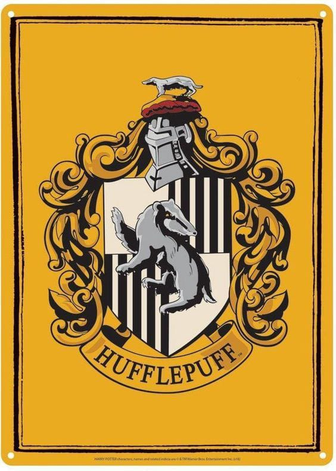
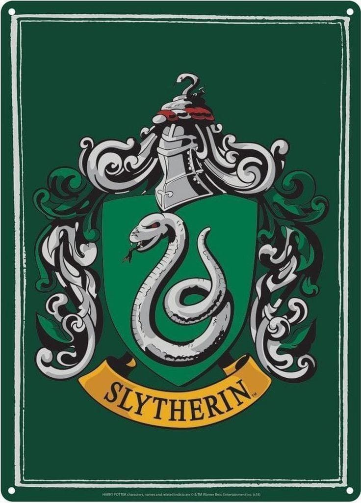

Gryffindor values courage, bravery, nerve, and chivalry. Gryffindor's mascot is the lion, and its colours are scarlet red and gold (maroon and gold on the ties and scarves). During the books, the Head of this house is the Transfiguration Professor and Deputy Headmistress, Minerva McGonagall until she becomes headmistress, and the house ghost is Sir Nicholas de Mimsy-Porpington, more commonly known as Nearly Headless Nick. According to Rowling, Gryffindor corresponds roughly to the element of fire. The founder of the house is Godric Gryffindor.

Hufflepuff values hard work, patience, justice, and loyalty. The house mascot is the badger, and canary yellow and black (or golden yellow and graphite in the Fantastic Beasts films) are its colours. During the books, the Head of this house is the Herbology Professor Pomona Sprout, and the house ghost is the Fat Friar. According to Rowling, Hufflepuff corresponds roughly to the element of earth. The founder of this house is Helga Hufflepuff.

Slytherin values ambition, cunning, leadership, and resourcefulness; the Sorting Hat said in Harry Potter and the Philosopher's Stone that Slytherins will do anything to get their way. The house mascot of Slytherin is the serpent, and the house colours are green and silver. Throughout the series, until the seventh book, the Head of House is Professor Severus Snape. Then, the previous Head of House Professor Horace Slughorn comes out of retirement, re-assuming authority after Snape becomes headmaster.